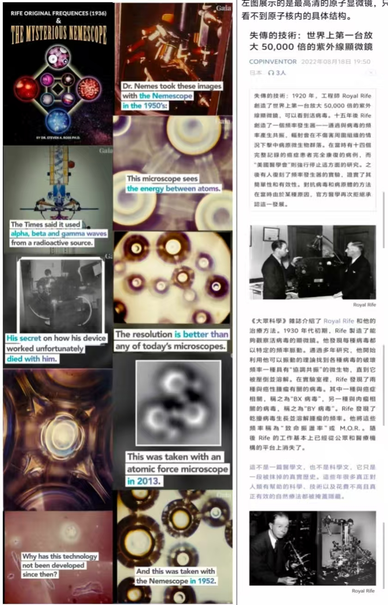

一台"据说能拍出原子彩色照片"的显微镜（Elmer P. Nemes，1950s）。 本页做三件事：讲清它声称的原理、列出它确实留下的东西（专利号）、标出它没有任何东西的地方。
| 项 | 内容 |
|---|---|
| 姓名 | Elmer P. Nemes（匈牙利裔，1964 年报道时 44 岁，住加州 Beverly Hills） |
| 本职 | 医生（报道写作 physician，一说脑外科医生）——不是光学或电子显微镜专业出身 |
| 专利 | US 2,850,661「Lamp / 冷阴极管」 US 3,129,353「Multiple Radiation Source Microscope（多辐射源显微镜）」 |
| 公开报道 | Science & Mechanics, 1964 年 1 月，David Legerman 撰《First Photos of the Atom!》报道口径 |
| 结局 | 1957 年整机在 Bryn Camera Shop（Melrose Ave）被盗，追到纽约后下落不明；他本人去世后，构建细节没有留下可操作的完整记录 |
关键要理解：它不是"把东西放大来看"，而是"让东西自己发光"。 传统显微镜（光学 / 电子）是外面打光、接收散射或透射； Nemescope 声称的是激发样品自身按共振频率发光，再把这份自发光成像。
用一句话说：一个源负责"点亮"，一个源负责"染色"。 两个相近频率叠加会产生拍频（beat）——拍频把单一谱线摊成一段连续色带， 于是"黑白轮廓"变成"真彩色"。这就是它为什么宣称能拍彩色原子像， 而当时的电镜只有灰阶阴影。
| 环节 | 配置 | 作用 |
|---|---|---|
| 冷阴极灯（阴极枪） | 多灯丝分别充电，18 V 输入经放大到 608 V 发射端；预热铂、金、锗、钨靶 | 一次照明 / 轰击源 |
| 石英聚光镜 | 真空腔内注入分子氮；石英窗口、滤片、石英棱镜/透镜 | 约束与聚焦"较长波"的射线 |
| 放射源 | 两个镭枪，各 5,400,000 eV；可换 14C、铯、钴等同位素；镭晶体可熔进石英透镜 | 提供 α / β / γ 激发 |
| 高频线圈 | 磁控管，240 → 35,000 MHz 可切换 | 搅动 / 激发分子结构 |
| 成像 | 前置正析像管（orthicon）拾取高段共振频率 → 放大 → 彩色显示或投到银幕 | 转成可见图像 |
另有一说：核心是 "radiation gun"——约 2 英寸粗、10 英寸长的钢管，管上开孔嵌入不同波段的半宝石， 宝石需人为制造缺陷（在高压釜中加热到 5,500 °F）。这一条来自助手 Betty Lee 的回忆，不是专利文字。

| 宣称 | 证据等级 | 说明 |
|---|---|---|
| 有两项美国专利 | 可查 | US 2,850,661 / 3,129,353，这是最硬的一条——但专利审查不要求证明效果 |
| "拍到原子"、"500 万倍仍有分辨率" | 未复现 | 来源是 1964 年杂志报道与助手回忆；无独立实验室重复，无原始底片 |
| 能拍到癌细胞与病毒的关系（1955，墨西哥城） | 未复现 | 与 Rife 那套"病毒形态"叙事同源，主流病理学未采纳 |
| " Enzymes 首次在显微镜下被解析"（1957） | 未复现 | 酶的尺度约几 nm，当时无任何手段可"看见"其形状 |
| 分辨率"超过今天任何显微镜" | 疑似夸大 | 现代 AFM/STM 已能做到原子分辨并给出标定；主张"超越"却无可比数据 |
| 学术界的评价 | 有文献 | Quekett 显微学会会刊 2003 年（Bracegirdle）专文考据 Rife 显微镜， 结论倾向"缺乏可信的显微学证据"；Nemescope 与它同属这一类叙事 |
| 问 | 答 |
|---|---|
| "它真的拍到原子了吗？" | 没有可复现的证据。有专利、有 1950s 的照片、有当年报道，但没有独立重复。 |
| "原理上说得通吗？" | 第一步（激发元素发光）说得通；第二步（自发光携带位置信息）说不通——没有物镜就没有相位收集。 |
| "技术为什么没延续？" | 最简洁的解释不是"被压制"，而是它本来就没稳定工作过：没有第二个人能复现，就没有传承。 |
| "那这些照片是什么？" | 可能是激发发光、干涉/衍射花样、样品污染或后期处理的结果。能产生漂亮图案 ≠ 能分辨原子。 |
assets/nemescope_poster.jpg、assets/nemescope_compare.jpg
（来自本项目 schauberger 网页素材库；同批宣传材料，证据级别只到"有印刷品"）。